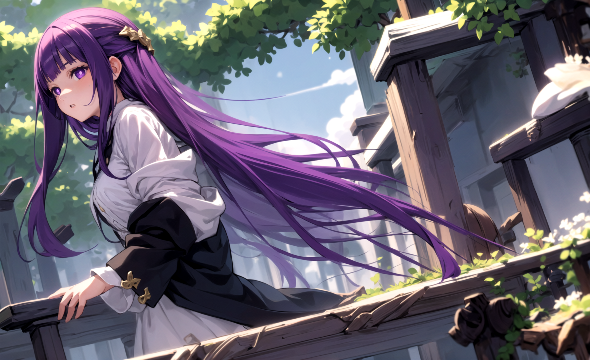
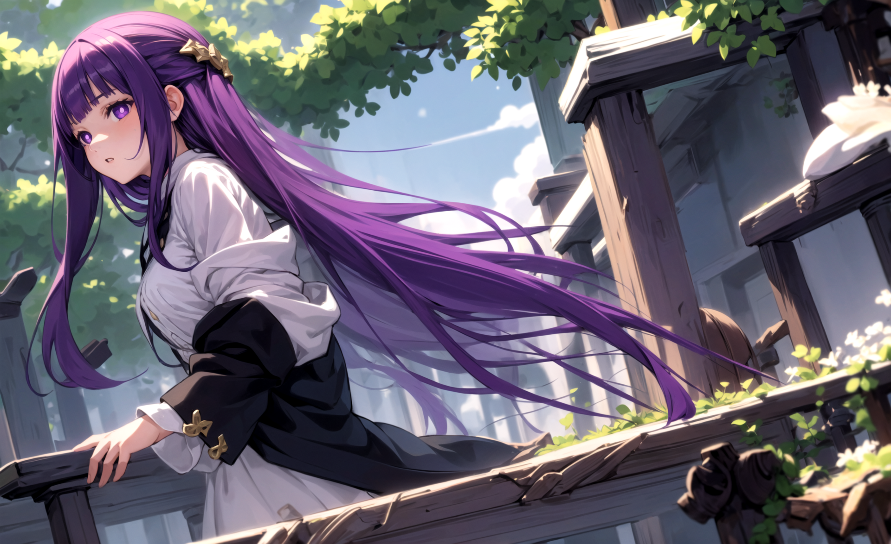

Seja bem vindo ao site que fiz
para desenvolver com o uso da biblioteca Motion
pode ignorar esse texto a partir de agr so
preciso de algo para encher linguiça
Frieren

Seja bem vindo ao site que fiz
para desenvolver com o uso da biblioteca Motion
pode ignorar esse texto a partir de agr so
preciso de algo para encher linguiça
Frieren e a Jornada para o Além é um aclamado anime de fantasia que explora temas profundos como a passagem do tempo, o luto e a importância das conexões humanas...


 
